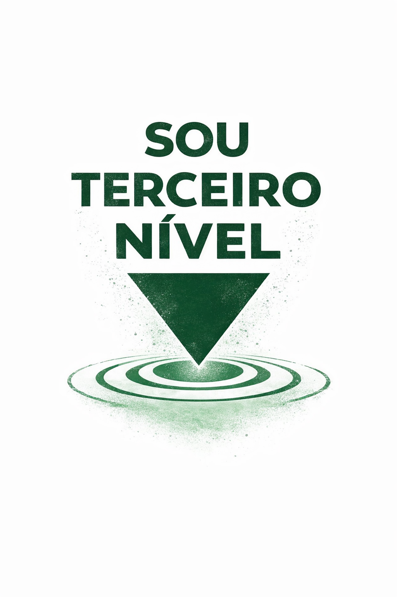
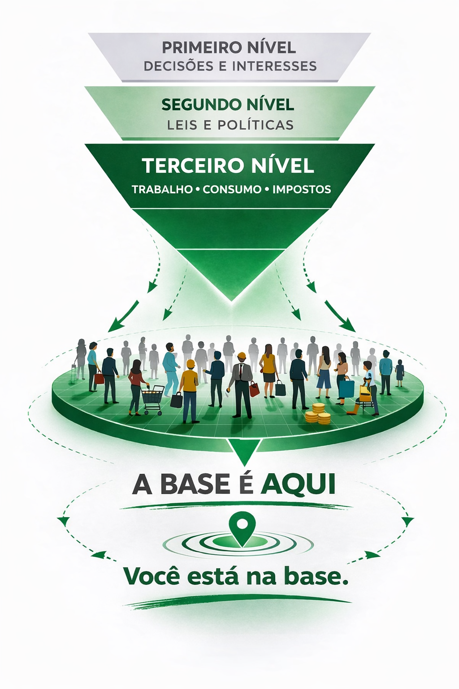

Este projeto existe para marcar a posição de quem faz o país funcionar.
SEM VOCÊ,
nada do que funciona
funcionaria.

O que você viu ali é a estrutura.
E quem sustenta essa estrutura
está na base.
É de lá que vêm
o trabalho,
o consumo
e os impostos.
É isso que mantém tudo funcionando.
Se você está na base
e sustenta o funcionamento do país,
essa estrutura funciona para quem?
Para quem está na base?
Ou para quem está no topo?
O nível que decide
representa quem?
Se a base sustenta tudo,
ela precisa marcar sua posição.
E posição começa com entendimento.
Para marcar posição,
é preciso entender
o que representa para essa estrutura.
E como essa estrutura funciona.
Sem isso,
nada muda.
E se a estrutura funciona por meio de decisões,
então transformar a realidade
depende de quem decide.
E de quem você escolhe para representar.
O poder não está em um lugar só.
As decisões passam por espaços diferentes.
O Executivo propõe e conduz.
O Legislativo discute, altera,
aprova ou trava.
É nessa relação
que a direção do país se define.
Se as decisões passam por esses espaços,
a pergunta muda:
onde a base pode influir?
Principalmente no voto.
É por ele que se escolhe
quem ocupa esses lugares.
E quem representa interesses
dentro da estrutura.
E isso define
como as decisões vão acontecer.
Se a estrutura funciona por representação,
então mudar a realidade
não depende só de querer mudança.
Depende de escolher com critério
quem vai decidir.
E de entender
a quem esses representantes servem.
Nem sempre há tempo para buscar entendimento.
A rotina ocupa.
O trabalho ocupa.
A vida acontece.
Por isso, o caminho aqui é outro.
Em vez de ir atrás,
o entendimento chega até você.
Direto no WhatsApp.
Sem complicação.
No tempo possível.
Poucos envios.
Só quando vale a pena.
As camisetas são pontos de observação.
Ajudam a enxergar
o que normalmente passa despercebido.
Quem está na base sustenta o funcionamento do país.
Entender isso muda a forma de ver.
E a forma de escolher.
COM VOCÊ,
MUDA.
Se fez sentido pra você,
compartilhe com quem também está na base.